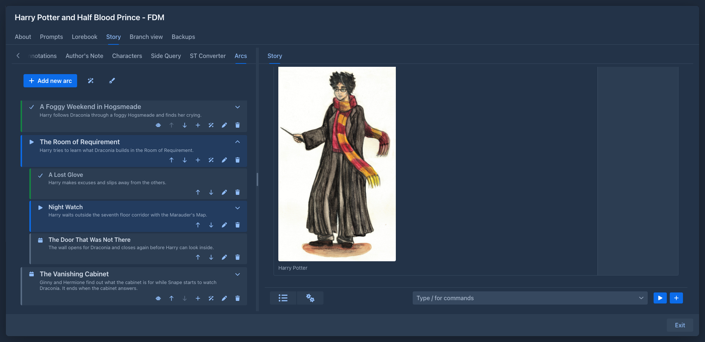
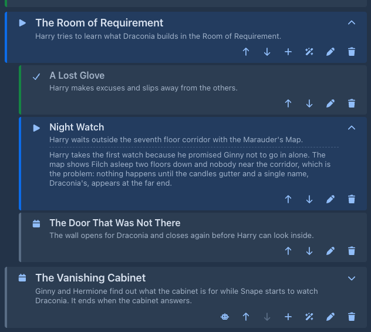
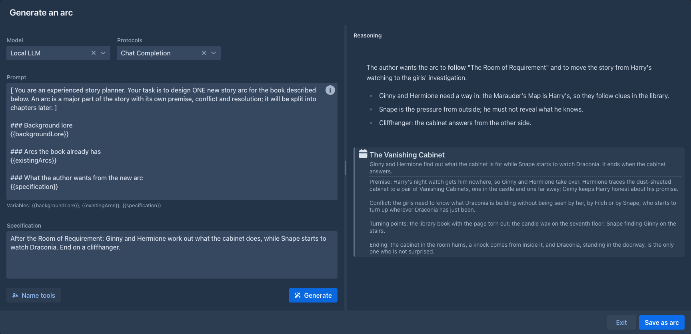
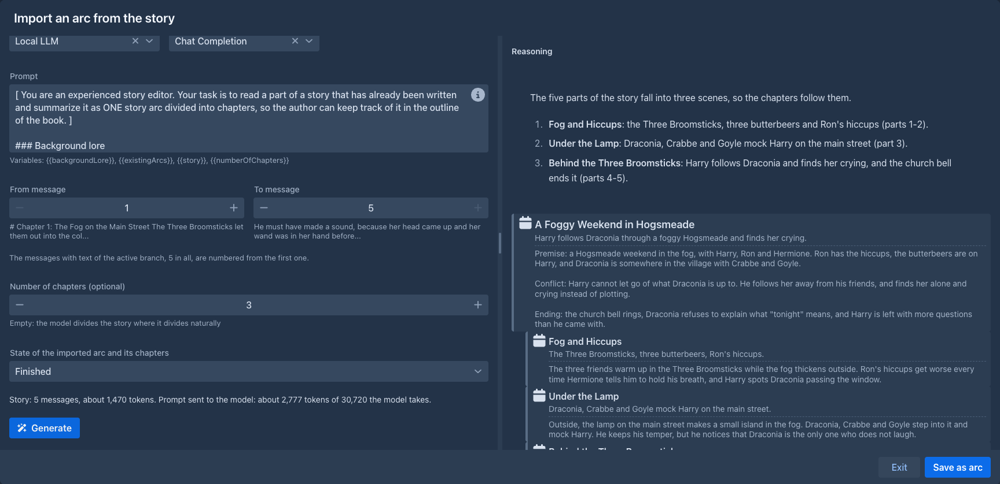
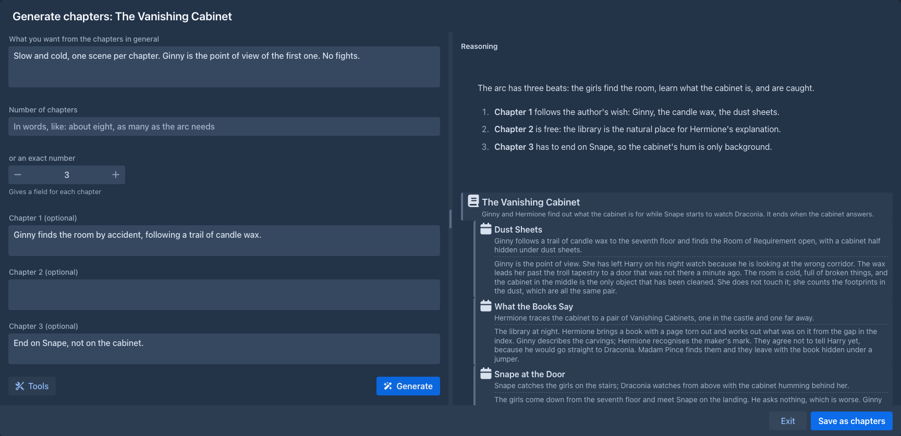
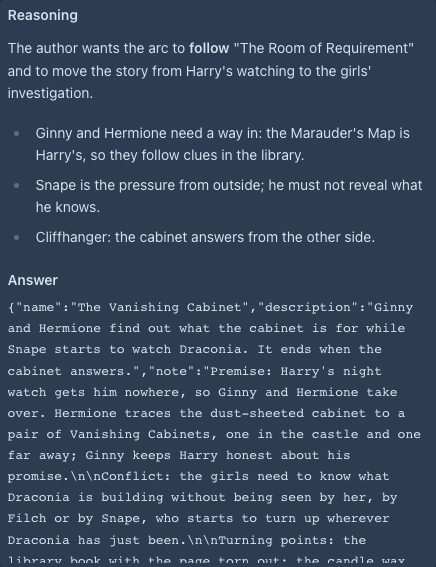

Arc Outline
The plan of your book in the sidebar: arcs, each split into chapters, with the state of every one of them, and a model that can write arcs and chapters for you. The outline is not part of the story prompt; the generators and the Side Query can use it when you ask them to.
The Arcs tab
The left sidebar of the story editor gets an Arcs tab next to Outline. Add new arc opens the dialog of an arc:
Chapters have the same fields. The list shows every arc as a card with its chapters indented below it. The color of a card follows its state: grey for planned, blue for the current one, green with a dimmed title for finished ones. The buttons of a card:
Next to the wand at the top is a pen with a feather: it drafts the instructions of the next turn from the current chapter, see

The note of a chapter
A chapter that has a note shows a chevron on the right. It opens the note under the description, in the list, so you can read the details of a chapter (the ones the model wrote for it, for example) without opening the dialog; press it again to hide the note. Which notes are open is not saved.

Moving chapters between arcs
A chapter moved up from the first place of its arc goes to the end of the previous arc; one moved down from the last place goes to the start of the next arc. Keep pressing the arrow to take a chapter as far as you need.
Drafting the instructions for the current chapter
The pen with a feather next to Add new arc opens the window that lets the model draft the instructions of the next turn, with the data of the chapter the story is at as its Plan of the Story. The current chapter is the first chapter marked Current; when none is, the first one that is not Finished; an arc marked current that has no chapters yet stands alone. The model gets that arc and chapter with their descriptions and notes, and the title and description (not the note) of the chapter after it, with the warning that the story must not get there yet. The window starts with what you typed into Instructions of the new turn panel as the guidance; Use as Instructions puts the draft into that panel and opens it. Without a current chapter the button says so.
The same data is a source for the Side Query, see
Finishing an arc
Marking an arc Finished marks all its chapters Finished too. Changing an arc to another state leaves its chapters as they are.
The outline is saved with the book as soon as you change it, so it is included in its backups.
The outline as a source for other extensions
The outline is offered to other extensions as a source of data about the book: in Side Query check
Arc outline in the plug popover to send the arcs, their states, descriptions and chapters with your questions. There
are two versions: Arc outline is the terse one (descriptions only), Arc outline (with notes) adds the note of every
arc and chapter under its description, which is where the details of generated arcs and chapters are. Your private notes
are sent only when you check the second one. A third source, Arc outline: current chapter, sends only the arc and the chapter
the story is at (see
Generating an arc
The wand button next to Add new arc opens a menu with two items: Generate an arc asks the model to write a new arc, Import from story summarizes what you have already written, see
The dialog of Generate an arc has two halves.
On the left:
On the right you see the reasoning of the model as it is written and, as soon as the answer begins, the arc it proposes - a name, a terse description and a longer note - shown like an arc of the outline (the note under its description) and growing as the answer streams in. The description is what the outline shows, so the model is asked to keep it to a couple of sentences and to put the details into the note, which ends up in the Note of the saved arc. When the model is done, its answer is checked; if it is not a valid arc (for example the note is missing), the dialog says so and the arc can't be saved.

Save as arc adds the arc at the end of the outline. To try again, press Generate once more, with the same or a changed prompt or specification; the previous answer is replaced.
Importing an arc from the story
Import from story in the menu of the wand asks the model to read a part of your story and write it down as one arc with its chapters, so you can bring a book you have already written into the outline. The model always reads the active branch of the book, as it is when you open the dialog. The dialog is like the one for arcs, with these choices on the left:

There are no tools here, the names are in the story. On the right you see the reasoning, then the arc and its chapters as the model writes them. Save as arc adds the arc with its chapters at the end of the outline; every one of them keeps the reasoning and the answer of the model and has its own robot button. A long story is best imported in several steps, one arc for each range.
Generating chapters
The wand button on an arc asks the model to divide that arc into chapters. The dialog is like the one for arcs, with these choices on the left:
On the right you see the reasoning, then the arc with the chapters it already has, and the new chapters as the model writes them. Save as chapters adds them at the end of the arc, each with a terse description and the details in its note (like arcs). Every new chapter keeps the reasoning and the answer of the model, and has its own robot button.

An arc or chapter written by the model keeps its reasoning and the answer it came from. The robot button on it opens them in a small popover, out of the way.

Commands
The outline and its generators are also commands, for the command line and for
agents. They work on the book that is open (an agent: on its working copy), and an open Arcs tab shows
the change at once. Arcs and chapters are given by number, as the outline shows them: the first arc is 1, the first
chapter of an arc is 1 (the numbers change when something before them is added, removed or moved). A command that
changes an arc or a chapter takes only the fields you give it; an empty text clears a description or a note.
The three generating commands use the same prompts as the dialogs (your Extension Settings → Arc Outline, or the
defaults), the model and protocol of the book (your default model when the book has none) and no tools: a caller that
wants names gets them with the commands of the Name generator or the Name provider
and writes them into the specification. Like the dialogs they save only when asked: with save false (the default) they
return the arc or the chapters as JSON and store nothing, with save true they add them to the outline (an arc at the end,
chapters at the end of the arc) and the answer has their numbers. A story that is too long for the model is refused by
/import-arc-from-story: choose fewer messages. The generating commands take a while, and stop when the run is stopped.
Adding and changing is not destructive; only the two delete commands are, which an agent may be set to ask you about.